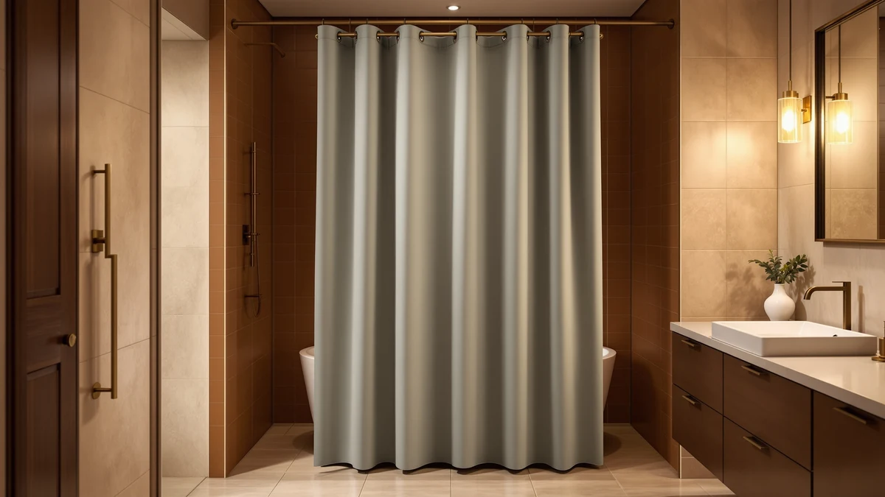

Barossa Design Shower Curtain Review (2026): Worth It?
Prices and picks verified as of November 2026. Independent, reader-supported reviews.


Quick Answer
The Barossa Design Short Shower Curtain pairs a 71 x 66 inch cut with a polyester face and PEVA backing, so it works as a curtain and liner in one piece at $19.99. Its shorter length fits tub showers and low-ceiling bathrooms better than a standard 72 inch curtain. If you want a different look at the same price, the UIOSANRT Matte Black and Blgiont Farmhouse alternatives below are worth comparing first.
Our pick: Barossa Design Short Shower Curtain, $19.99 Check Price on Amazon
Bottom line: our top pick is the Barossa Design Short Shower Curtain with 66 inch Length Fabric at $19.99.
Things to Know Before You Buy
- The Barossa Design Short Shower Curtain measures 71 inches wide by 66 inches long, shorter than the standard 72 inch drop, so it suits tub showers, campers, and low-ceiling bathrooms better than a full-length stall.
- Its polyester face is backed with water-resistant PEVA, combining the curtain and the liner in a single purchase instead of two separate products.
- At $19.99, it sits in the same price range as the UIOSANRT Matte Black and Blgiont Farmhouse alternatives below, so the choice between them comes down to look rather than budget.
- The curtain ships as a single pack rather than a curtain-and-liner bundle, which keeps setup to one purchase.
- If your shower uses a curved or oval rod, pair either curtain with a rod built for that shape, such as the curved-rod picks we cover separately, since this review focuses on a standard straight rod.
This Barossa Design Shower Curtain Review exists because shoppers keep landing on the Short Shower Curtain at $19.99 and want to know whether its 71 x 66 inch cut and polyester PEVA build earn that price, or whether a standard-size curtain would serve them better. Barossa built this one shorter than the usual 72 inch drop, which puts it in a narrow category of curtains made for low ceilings, tub showers, and smaller stalls instead of a one-size-fits-all rectangle. The combined polyester-and-PEVA construction is the other reason it shows up in comparisons: it works as the visible curtain and the water barrier in one purchase, which is not how most curtains at this price are built.
We built this review the way we build every shower curtain comparison on this site: by lining up the manufacturer's listed specs, the current Amazon price, and verified owner feedback, rather than installing the curtain ourselves. For the Barossa Design Short Shower Curtain, that means weighing its 71 x 66 inch size and two-in-one liner against three products shoppers commonly compare it to: the UIOSANRT Matte Black, the Blgiont Farmhouse Blue Floral print, and the TEECK telescoping rod some buyers pair with either curtain. Each one answers a different question, whether that is style, pattern, or the hardware the curtain hangs from.
At $19.99, the Barossa Design Short Shower Curtain costs about the same as a single mid-range PEVA liner sold on its own, and that is the real comparison point once you account for the fact that most tub-shower setups need a liner even when a decorative curtain is already hanging. Shoppers who would otherwise buy a separate liner and curtain are often looking at a combined cost closer to $30, so pricing a two-in-one design at $19.99 tells you more about its value than comparing sticker prices alone.
Why You Should Trust Us
Ilane Tall covers bathroom textiles and hardware for Best Shower Curtains, focusing on how curtain materials, sizing, and liners hold up to daily bathroom use. For this Barossa Design Shower Curtain Review, she compared the Short Shower Curtain's listed dimensions, material, and current price against three alternatives shoppers commonly cross-shop. We do not run a fake testing lab or claim to have installed every curtain we cover. Our picks come from comparing what is documented on the listing against verified owner feedback, and we say so plainly when review data for a given product is limited, as it is here.
Our Research Experience
We did not install the Barossa Design Short Shower Curtain ourselves. Instead, we researched its listed specs on Amazon, tracked its $19.99 price, and compared its polyester PEVA construction against the UIOSANRT, Blgiont, and TEECK alternatives covered below. That approach cannot replicate months of daily use in a specific bathroom, but it does let us line up what each product actually offers on paper rather than repeating marketing copy. For this Barossa Design Shower Curtain Review, we weighted the curtain's two-in-one liner design and its shorter-than-standard length heavily, since those two features change who the curtain fits most, and we noted wherever verified review data was too thin to draw a firm conclusion.
Overview & Specs

Barossa Design Short Shower Curtain
What we like
- 71 x 66 inch cut fits tub showers and low-ceiling bathrooms better than a standard-length curtain
- Combined polyester-and-PEVA build skips a separate liner purchase
- $19.99 price undercuts most two-in-one curtain-and-liner sets
- Single-pack sizing keeps the purchase simple for a one-curtain bathroom
Flaws but not dealbreakers
- 66 inch length will leave extra fabric pooling if your rod sits at a standard 72 inch height
- PEVA backing means air drying rather than a hot dryer cycle
- Verified review data on this listing is limited compared to higher-volume curtains in this comparison
| Material | Polyester / PEVA |
| Size | 71"W x 66"L (Pack of 1) |
The Barossa Design Short Shower Curtain solves a sizing problem most shower curtain roundups skip over. Most curtains default to a 72 inch drop built for a standard floor-to-ceiling shower, but tub showers, campers, and bathrooms with a lower rod height end up with several extra inches of fabric pooling on the floor. Barossa cuts this one to 71 inches wide by 66 inches long specifically to close that gap, and it combines a polyester face with a PEVA backing so the same piece works as the curtain and the water barrier. That two-in-one construction is the reason it can compete on price with separate curtain-and-liner sets even at $19.99.
Because the curtain ships as a single pack, setup comes down to one purchase and one hang, without matching a liner size to a curtain size separately. The polyester face gives it more body than a PEVA-only curtain, while the PEVA backing handles the water resistance a fabric-only curtain would lack on its own. The tradeoff is that this listing carries less verified review volume than some of the alternatives below, so buyers are relying more on the specs and construction than a large pattern of owner feedback.
What We Liked
The clearest advantage of the Barossa Design Short Shower Curtain is the length. Shoppers with a tub shower or a lower ceiling consistently look for a curtain shorter than the standard 72 inches, and at 66 inches this one is built for exactly that gap instead of requiring a cut-down or a bunched hem. The combined polyester-and-PEVA construction is the other point in its favor: it removes the extra step of buying and sizing a separate liner, which keeps the total cost close to what a liner alone would cost elsewhere.
What Could Be Better
The same 66 inch length that helps tub showers works against this curtain in a standard floor-to-ceiling stall, where it will sit several inches short of a full 72 inch drop. The PEVA backing also means the curtain should air dry rather than go through a hot dryer cycle, and buyers should expect to hang it for a day or two to let factory creases settle out. Review volume on this specific listing is lighter than on some of the alternatives below, so shoppers have less verified owner feedback to lean on before buying.
Who Is It For?
This curtain fits a specific setup well. If your bathroom has a tub shower, a lower ceiling, or any rod height shorter than the standard 72 inches, the Barossa Design Short Shower Curtain is built for that gap instead of requiring you to trim down a full-length curtain. The built-in PEVA liner also suits anyone who wants a single purchase rather than coordinating a curtain and a liner separately.
Skip it if your shower uses a standard-height rod. At that height, a 66 inch curtain will sit too high off the floor, and a full-length option like the ones in our PEVA shower curtain roundup will fit better for the same price range. Renters who move between apartments with different ceiling heights may also want to hold off, since a shorter curtain built for one bathroom will not necessarily suit the next one.
Alternatives to Consider
Not every bathroom needs a shorter curtain, and shoppers who do want one may still prioritize a different look or a different piece of hardware. Here is how three products people commonly compare against the Barossa Design Short Shower Curtain stack up: a matte black finish, a farmhouse print, and a telescoping rod to hang either one from.

Editor’s Pick
UIOSANRT Matte Black Shower Curtain
The UIOSANRT trades Barossa's two-in-one liner for a matte black finish aimed at a more minimalist bathroom, and it matches the Barossa on price at $19.99, so the decision comes down to look rather than cost.
$19.99
Check Price on Amazon
Best Value
TEECK Shower Curtain Rod 32-80
The TEECK is not a curtain at all. It is a telescoping rod that extends from 32 to 80 inches, which makes it a practical pairing for either the Barossa or the UIOSANRT if your bathroom needs a new rod rather than a new curtain.
$19.99
Check Price on Amazon
Premium Choice
Blgiont Farmhouse Blue Floral Shower
The Blgiont brings a farmhouse-style blue floral print to the same $19.99 price point, making it the pick for a patterned, cottage-style bathroom rather than the minimalist look of the Barossa or the UIOSANRT.
$19.99
Check Price on AmazonDoes the Barossa Design Short Shower Curtain fit a standard shower rod?
The curtain's 71 inch width fits a standard single shower rod, but its 66 inch length is shorter than the common 72 inch drop.
Do I need a separate liner with the Barossa Design Short Shower Curtain?
No.
Frequently Asked Questions
Does the Barossa Design Short Shower Curtain fit a standard shower rod?
The curtain's 71 inch width fits a standard single shower rod, but its 66 inch length is shorter than the common 72 inch drop. That makes it a better fit for tub showers and low-ceiling bathrooms where a full length curtain pools on the floor, rather than a typical floor to ceiling shower.
Do I need a separate liner with the Barossa Design Short Shower Curtain?
No. The curtain combines a polyester face with a PEVA backing in one piece, so it functions as both the curtain and the water barrier without a second liner purchase. That is the main reason its $19.99 price competes with options that charge separately for a curtain and a liner.
How does the Barossa Design Short Shower Curtain compare to the UIOSANRT Matte Black option?
Both are priced at $19.99, so the decision comes down to look and construction. The Barossa pairs its polyester face with a built in PEVA liner, while the UIOSANRT focuses on a matte black finish for a more minimalist bathroom, without the two-in-one liner design.
Final Verdict
This Barossa Design Shower Curtain Review comes down to one question: does your bathroom need a shorter curtain? If it does, the Barossa Design Short Shower Curtain is the most purpose-built option in this comparison. Its 71 x 66 inch cut and combined polyester-PEVA construction solve a sizing problem that a standard 72 inch curtain cannot, and at $19.99 it does that without charging a premium for the shorter size. If your rod sits at a standard height instead, put that same budget toward the UIOSANRT Matte Black or the Blgiont Farmhouse print, both priced the same but built for a full-length drop. And if your bathroom needs new hardware before it needs a new curtain, the TEECK rod covers a 32 to 80 inch span wide enough for any of the three.